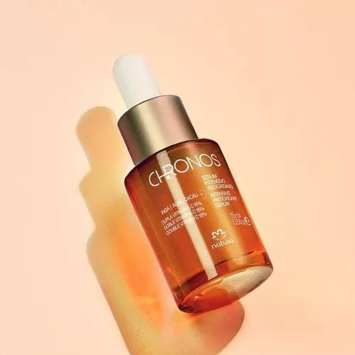
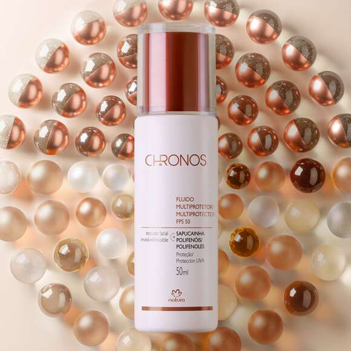

NATURA
DESCUBRA A BELEZA NATURAL COM A NATURA
Transformando sua rotina diária com produtos naturais e sustentáveis.
3 PRINCIPAIS PRODUTOS EM DESTAQUE ATUALMENTE:
Chronos Fluido Multiprotetor FPS 50
Um produto de proteção solar que também oferece benefícios antissinais e hidratação intensiva para todos os tipos de pele.
 
Ekos Óleo Trifásico Açaí:
Um óleo corporal que combina três fases nutritivas, proporcionando hidratação, nutrição e perfumação para a pele.
Essencial Deo Parfum:
Uma linha de perfumes que combina fragrâncias sofisticadas e duradouras com embalagens elegantes.
TOP 10 PRODUTOS DESTACADOS DA NATURA: INOVAÇÃO, QUALIDADE E CUIDADO
Chronos Pharma Sérum Anti-Idade: - Este sérum é reconhecido por sua formulação avançada que combate os sinais visíveis de envelhecimento, como rugas e linhas finas. É um destaque na linha Chronos devido à sua eficácia comprovada e ao uso de tecnologias inovadoras em cuidados com a pele.
Ekos Óleo Corporal Andiroba: - Usado por suas propriedades regeneradoras e hidratantes, o óleo de andiroba é extraído de forma sustentável da Amazônia. É valorizado por seus benefícios para a pele, pelo compromisso com a preservação ambiental e pelo desenvolvimento sustentável na região.
Essencial Oud: - Esse perfume é um dos mais vendidos da Natura, ele é conhecido por seu aroma sofisticado e duradouro. O oud, uma resina aromática rara e valiosa, é o ingrediente principal deste perfume, que cativa e destaca-se pela sua exclusividade e elegância.
Natura Homem Verum: - Oferece uma linha completa de cuidados masculinos, desde perfumes até produtos para barba e pele. É reconhecida pela sua qualidade e forma como atende às necessidades específicas do público masculino (combina eficácia com fragrâncias marcantes).
Una Batom Matific: - Destaca-se pela sua fórmula de longa duração e por uma ampla gama de cores que se adaptam a diferentes tons de pele. É um favorito entre os produtos de maquiagem da Natura, garantindo lábios vibrantes e confortáveis por horas.
Mamãe e Bebê Água de Colônia Sem Álcool: - Desenvolvida especialmente para a pele sensível dos bebês, esta água de colônia é segura e suave, refletindo o compromisso da Natura com a segurança e qualidade nos cuidados infantis.
Sève Óleo Desodorante Corporal: - Um clássico da Natura, conhecido por sua fragrância envolvente e pela capacidade de hidratar profundamente a pele, deixando - a macia, perumada e luminosa, proporcionando uma experiência sensorial única.
Linha Naturé: - Formulada especialmente para crianças, esta linha oferece produtos dermatologicamente testados e suaves, ideais para o cuidado diário dos pequenos. Destaca-se pela preocupação com a segurança e bem-estar das crianças.
Faces Máscara para Cílios Alongamento Intenso: - Conhecida por sua capacidade de alongar os cílios sem formar grumos. É apreciada pela sua qualidade superior e pelo preço acessível, tornando-a uma escolha favorita entre os consumidores.
Ekos Patauá Shampoo Fortificante: - Valorizado pelo uso do óleo de patauá, conhecido por suas propriedades fortificantes e nutritivas para o cabelo. Este shampoo é indicado para fortalecer os fios e proporcionar um cabelo saudável.
INFOGRÁFICO

VÍDEOS